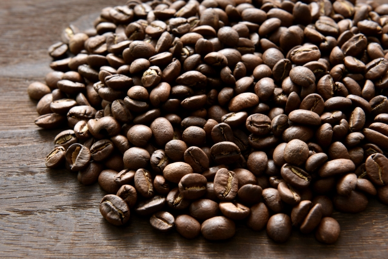

コロンビアとは？

コロンビアコーヒーは、南米コロンビアの豊かな自然環境と理想的な気候条件のもとで栽培される高品質なコーヒー豆です。縦に長い国土を持つコロンビアでは、地域ごとに雨季と乾季が異なるため、1年を通じて安定した収穫が可能です。そのため、世界有数のコーヒー生産国として広く知られています。
コロンビアコーヒーの味わいは、苦味と酸味のバランスが良く、クセが少ないことが特徴です。また、しっかりとしたコクも感じられ、飲みやすさから日本でも非常に人気が高い銘柄の一つです。
豊かな風味とバランスの取れた味わいはブレンドにも向いているため、ブレンドコーヒーのベースとして用いられることも多いです。
コロンビアコーヒーの味わいは、苦味と酸味のバランスが良く、クセが少ないことが特徴です。また、しっかりとしたコクも感じられ、飲みやすさから日本でも非常に人気が高い銘柄の一つです。
豊かな風味とバランスの取れた味わいはブレンドにも向いているため、ブレンドコーヒーのベースとして用いられることも多いです。
コロンビアの産地と歴史
コロンビアコーヒーは、南米コロンビア全域で栽培されており、地域ごとにも気候や標高が異なるため、コーヒーの風味にすこし違いが生まれます。北部は比較的標高が低く温暖で、収穫期は10月から2月。中部は最も栽培が盛んです。乾季と雨季があり二期作が行われている地域で、コロンビアのコーヒーの大部分はここで生産されます。。南部は比較的標高が高く冷涼で、収穫期は1月から6月。
コロンビアにおけるコーヒー栽培は18世紀頃に始まり、アンデス山脈の適した環境により広がっていきました。1927年にはコロンビアコーヒー生産者連合会（FNC）が設立され、品質向上の取り組みが行われています。ほとんどが小規模な農場で手作業で栽培されているというのも、コロンビアの特徴です。
コロンビアにおけるコーヒー栽培は18世紀頃に始まり、アンデス山脈の適した環境により広がっていきました。1927年にはコロンビアコーヒー生産者連合会（FNC）が設立され、品質向上の取り組みが行われています。ほとんどが小規模な農場で手作業で栽培されているというのも、コロンビアの特徴です。
コロンビアの味わい
コロンビアコーヒーは、優しい酸味と豊かなコクが特徴で、苦味と酸味のバランスが取れたきりっとした味わいです。クセが少なく非常に飲みやすい上品なコーヒーで、強すぎないコクが魅力。香ばしいコーヒー豆本来の香りが、飲むとフルーツのような芳醇な香りへと広がります。産地によって微妙な違いはありますが、全体的に上品でバランスが取れていると言えます。
そのクセのなさから、よくブレンドのベースとして使われます。主張がそこまで強くないため、組み合わせる豆によって様々な味のコーヒーを作ることができます。
そのクセのなさから、よくブレンドのベースとして使われます。主張がそこまで強くないため、組み合わせる豆によって様々な味のコーヒーを作ることができます。